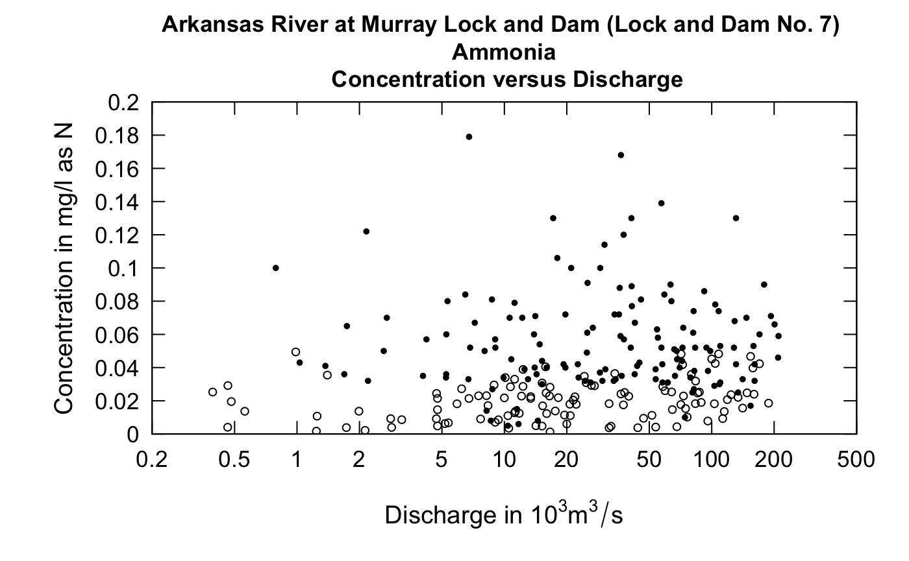
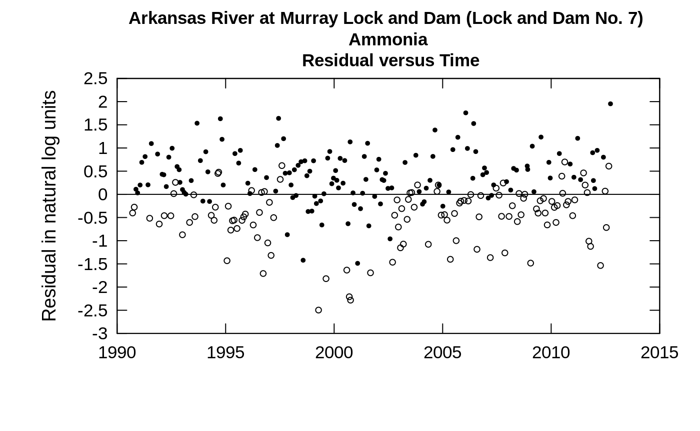
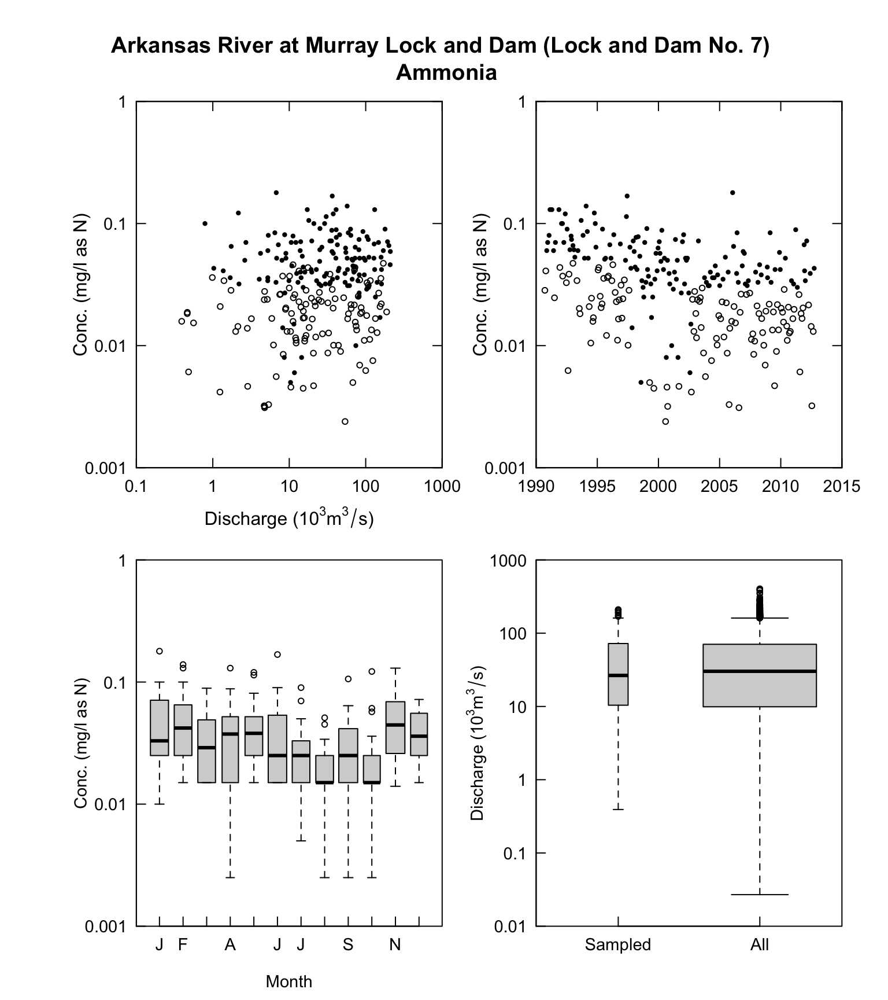
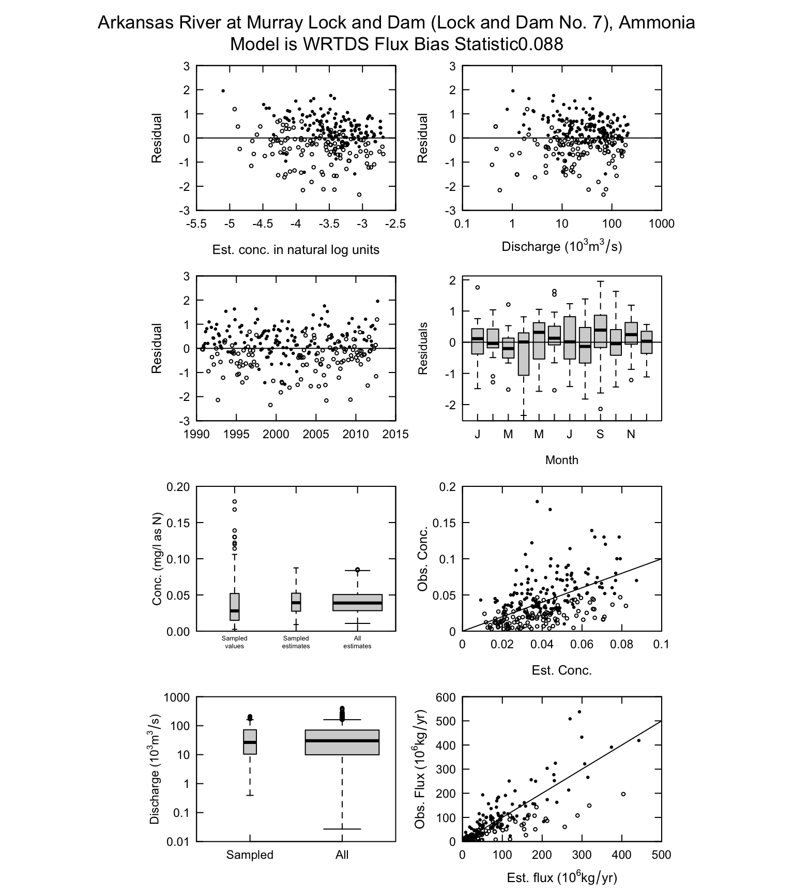

Randomized Censored Data
Robert M. Hirsch and Laura A. De Cicco
2016-07-15
Source:vignettes/rResid.Rmd
rResid.RmdIntroduction
When censored data are present in a water quality data set, depicting them in any type of scatter plot is a challenge. This applies to the problem of plotting the actual data values or plotting the residuals. What follows is an example that shows the problem.
The solid vertical lines, which represent the range of values that a given censored value could be, is very distracting in terms of getting a picture of the overall behavior of the data. We can see this even more if we try to look at the relationship of concentration to discharge.
It is difficult to see the relationship between ammonia concentration and discharge. If we look at residuals from a fitted WRTDS model and discharge we also find it difficult to see if the pattern looks reasonable (a horizontal cloud of points centered on the zero residual line) or if there is some substantial curvature to the relationship.
Here again, the plot is not very informative. What solutions might exist to resolve this problem of the graphical representation of the censored data?
The concept of randomized estimates of censored values
If we think about a fitted WRTDS model, what it is telling us is this: For some particular date and some particular discharge the model estimates a unique conditional probability distribution of concentration. That distribution is always a log normal distribution (that means that the log of concentration is normal) and that distribution of the log concentration has a particular mean (which in the EGRET package is always called yHat) and a particular standard deviation (which is always called SE). The Daily data frame has columns with these names, showing their value for each day of the record. However, for days on which there was a sample taken but that sample was reported as a “less than” value, we also know that there is an upper bound to what the concentration could have been. It is the reporting limit. As an aside, all of the following discussion would hold for an interval censored value. EGRET allows for these but they are not common. For simplicity of the discussion we will only consider left censored data, but the code being used here considers interval censored data as well.
So, what we can say about some particular censored value is that the log of the true value has a mean of yHat and a standard deviation of SE, it is normally distributed, but is constrained to be in the part of the normal distribution which is less than the log of the reporting limit. Such a random variable is known as a truncated normal random variable. Fortunately there is an R package entirely focused on the truncated normal distribution. It is called truncnorm. We can use truncnorm to generate a random number for each of the censored values and this random number will be drawn from the lower portion of normal distribution with the correct mean, standard deviation, and upper bound. The idea is to create these random values to substitute for the censored observations. We call them the rObserved values (the “r” denotes that they are randomly generated observations) and they reside in an augmented version of the Sample data frame in a column called Sample$rObserved. The figures below illustrate what a truncated normal distribution density function looks like. They show the density below the censoring threshold for two different examples. The rObserved values are samples from these density functions. The area under each density function is equal to 1.
What is most important to understand is that these randomly generated values are never used in any of the WRTDS computations that result in estimates of daily concentrations or fluxes, or annual average concentrations or fluxes, or any trends. These randomly generated values are created strictly to provide a more-easily interpreted set of diagonstic graphics. Here is an example of a plot of concentration versus time using this approach.
The solid circles are the uncensored observations and the open circles are these rObserved values. One thing to note is that if these values were to be generated a second time the graph would look slightly different. There is no unique set of values that will be plotted. The random numbers used will be different if we go back to the same data set and generate them again. Below we show such a figure and then redo the graphic with a second set of random numbers. The code is shown with the graphics.
eList <- makeAugmentedSample(eList)
plotConcQ(eList, qUnit = 4, randomCensored = TRUE)
# now do it all over again
eList <- makeAugmentedSample(eList)
plotConcQ(eList, qUnit = 4, randomCensored = TRUE)
Careful examination of these two figures reveals that the black dots are exactly the same in both, but the open circles are different between the two. In looking at these kinds of plots we are not necessarily looking to see what actually happened on a particular day, but rather to understand the pattern of the relationship between the two variables being plotted.
Randomized residuals
Many of the diagnostics we use in EGRET are plots of residuals (on the y-axis) versus predicted value, or time, or discharge (on the x-axis). Once we have this rObserved value, we can compute a randomized residual which is called rResid (again the “r” denotes that they are randomly generated residuals) and is stored as Sample$rResid in EGRET. The computation is this:
rResid = rObserved - predicted value. All three variables in this equation are in log concentration units.
We can look at our residuals plots in the following manner (using the second set of rObserved values computed above).
plotResidTime(eList, randomCensored = TRUE)
plotResidQ(eList, qUnit = 4, randomCensored = TRUE)Details for how to include random residuals in your computations
In order to use the rObserved and rResid in making graphs in EGRET the process is the following.
- Bring in your data and create the eList in the usual way: eList <- mergeReport(INFO,Daily,Sample)
- Run modelEstimation in the usual way: eList <- modelEstimation(eList)
- Then augment the Sample data frame that is inside of the eList with the command:
eList <- makeAugmentedSample(eList)- To produce any one of the following graphics, using the rObserved or rResid values simply add the argument randomCensored = TRUE to the call to the graphical function. Note that it doesn’t matter if what is being plotted is an observed value or a residual, the argument is always randomCensored = TRUE. The original option of showing the vertical lines for censored values remains available as the default for any of these functions. The call can either say randomCensored = FALSE or just not include randomCensored in the argument list and the graphs will appear without these random values and without the open circle/closed circle symbology. The censored values or censored residuals will be shown as the vertical lines. The functions where this approach applies are these: plotConcPred, plotConcQ, plotConcTime, plotConcTimeDaily, plotFluxPred, plotFluxQ, plotFluxTImeDaily, plotResidPred, plotResidQ, plotResidTime. It is also available in the two multiple plot functions: multiPlotOverview, and fluxBiasMulti
For example:
multiPlotDataOverview(eList, qUnit = 4, randomCensored = TRUE)
fluxBiasMulti(eList, qUnit = 4, fluxUnit = 9, randomCensored = TRUE)
Two final thoughts
In the EGRET User Guide (https://pubs.usgs.gov/tm/04/a10/) the distinction is made between the graphical methods that are used to simply describe the data (and these graphics shown in multiPlotDataOverview) as distinct from graphical methods that are used to describe the WRTDS model of the system (such as the graphs in fluxBiasMulti). If the randomCensored = TRUE option is used with multiPlotDataOverview, or other graphical functions that normally don’t depend on the WRTDS model, they now become a hybrid, because they are using the WRTDS model to generate the random values used in the graphs. Take a graph such as plotConcQ. With randomCensored = FALSE it is a pure representation of the data. No assumptions are being made. But, when randomCensored = TRUE, it is now a representation of the data which is partly based on an assumption that the fitted WRTDS model is indeed a correct model. The fitted WRTDS model is partly determining the placement of the random values that are less than the reporting limit. If the analyst wants a “pure” representation of the data without any assumed model for graphing, then the randomCensored option should be set to FALSE.
Also, with figures such as shown in fluxBiasMulti, there is a kind of circularity in the logic. The circularity is this: we are using the graphs to assess the adequacy of the model fit, but we are using the model to estimate some of the observations. This circularity is not a fatal flaw to the approach, but is a reality that the user should consider. On balance, the authors think that using randomCensored = TRUE in all of the plots to which it applies is a beneficial approach because it enhances the ability of the analyst to interpret the figures. But, we reiterate here, the choice of using the random approach or not has no bearing whatsoever on the quantitative outputs that the WRTDS method in the EGRET package produces.